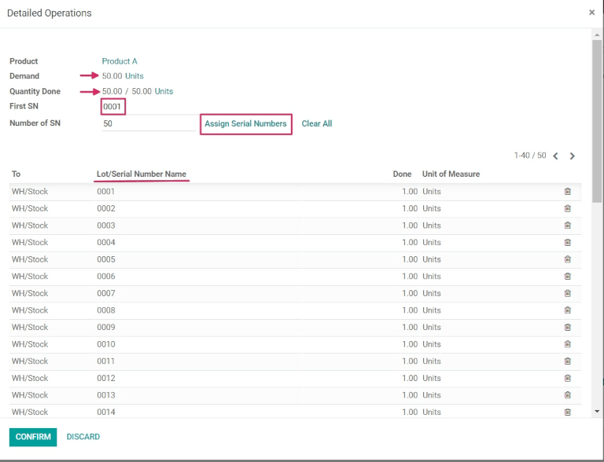
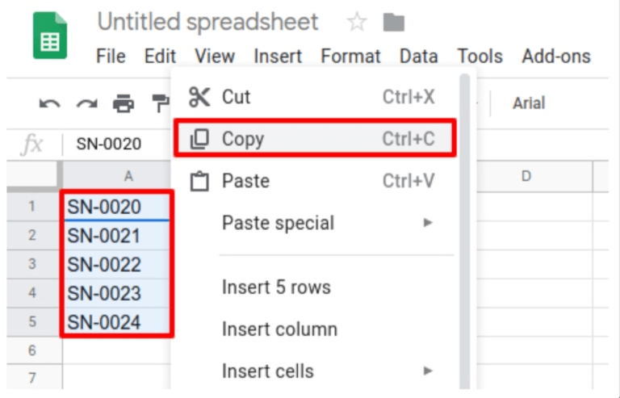
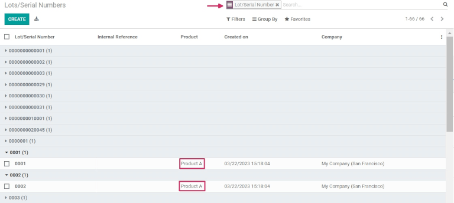

ใช้หมายเลขซีเรียลเพื่อติดตามผลิตภัณฑ์¶
หมายเลขซีเรียล เป็นหนึ่งในสองวิธีในการระบุและติดตามผลิตภัณฑ์ใน Odoo หมายเลขซีเรียลคือตัวระบุเฉพาะที่กำหนดขึ้นตามลำดับ (หรือเพิ่มขึ้นตามลำดับ) ให้กับสินค้าหรือผลิตภัณฑ์ เพื่อใช้ในการแยกแยะสินค้าหรือผลิตภัณฑ์ดังกล่าวจากสินค้าหรือผลิตภัณฑ์อื่น
หมายเลขซีเรียลสามารถประกอบด้วยตัวอักษรประเภทต่างๆ มากมาย อาจเป็นตัวเลขล้วน อาจประกอบด้วยตัวอักษรและสัญลักษณ์อื่นๆ หรืออาจผสมกันของลักษณะทั้งหมดที่กล่าวมาก็ได้
เป้าหมายของการกำหนดหมายเลขซีเรียลให้กับผลิตภัณฑ์แต่ละชิ้นคือเพื่อให้แน่ใจว่าสามารถระบุประวัติของสินค้าแต่ละรายการได้เมื่อผ่านซัพพลายเชน ซึ่งอาจมีประโยชน์สำหรับผู้ผลิตที่ให้บริการหลังการขายแก่ผลิตภัณฑ์ที่ขายและจัดส่ง
See also
เปิดใช้งานล็อตและหมายเลขซีเรียล¶
หากต้องการติดตามผลิตภัณฑ์โดยใช้หมายเลขซีเรียล จะต้องเปิดใช้งานฟีเจอร์ ล็อต & หมายเลขซีเรียล หากต้องการเปิดใช้งาน ให้ไปที่ เลื่อนลงไปที่ส่วน การตรวจสอบย้อนกลับ แล้วคลิกกล่องที่อยู่ถัดจาก ล็อต & หมายเลขซีเรียล อย่าลืมคลิกปุ่ม บันทึก เพื่อบันทึกการเปลี่ยนแปลง

กำหนดค่าการติดตามหมายเลขซีเรียลบนผลิตภัณฑ์¶
เมื่อเปิดใช้งานการตั้งค่า ล็อต & หมายเลขซีเรียล แล้ว ตอนนี้สามารถติดตามผลิตภัณฑ์แต่ละรายการได้โดยใช้หมายเลขซีเรียล หากต้องการกำหนดค่านี้ ให้ไปที่ และเลือกผลิตภัณฑ์ที่ต้องการติดตาม
เมื่ออยู่ที่แบบฟอร์มผลิตภัณฑ์แล้ว คลิก แก้ไข แล้วคลิกแท็บ สินค้าคงคลัง
เมื่ออยู่ในแบบฟอร์มผลิตภัณฑ์แล้ว ให้คลิก แก้ไข จากนั้นไปที่แท็บ สินค้าคงคลัง และเลื่อนไปที่ส่วน การตรวจสอบย้อนกลับ จากนั้นเลือกตัวเลือก โดยหมายเลขซีเรียลเฉพาะ แล้วคลิก บันทึก เพื่อบันทึกการเปลี่ยนแปลง ตอนนี้สามารถเลือกหมายเลขซีเรียลที่มีอยู่หรือหมายเลขซีเรียลใหม่ และกำหนดให้กับผลิตภัณฑ์ล็อตใหม่ที่ได้รับหรือผลิตขึ้น
Warning
หากผลิตภัณฑ์ไม่มีหมายเลขซีเรียลที่กำหนดไว้ หน้าต่างป๊อปอัปแสดงข้อผิดพลาดของผู้ใช้จะปรากฏขึ้น ข้อความแสดงข้อผิดพลาดระบุว่าผลิตภัณฑ์ในสต็อกไม่มีล็อต/หมายเลขซีเรียล อย่างไรก็ตาม สามารถกำหนดล็อต/หมายเลขซีเรียลให้กับผลิตภัณฑ์ได้โดยการปรับสินค้าคงคลัง
สร้างหมายเลขซีเรียลใหม่สำหรับผลิตภัณฑ์ที่อยู่ในสต็อกแล้ว¶
สามารถสร้างหมายเลขซีเรียลใหม่สำหรับผลิตภัณฑ์ที่มีอยู่ในสต็อกแล้วโดยที่ยังไม่มีการกำหนดหมายเลขซีเรียลได้ เมื่อต้องการทำเช่นนี้ ให้ไปที่ แล้วคลิก สร้าง การดำเนินการดังกล่าวจะแสดงแบบฟอร์มหมายเลขล็อต/ซีเรียลว่างเปล่า ในแบบฟอร์มนี้ ระบบจะสร้าง ล็อต/หมายเลขซีเรียล ใหม่โดยอัตโนมัติ
Tip
ในขณะที่ Odoo จะสร้างหมายเลขล็อต/หมายเลขซีเรียลใหม่โดยอัตโนมัติเพื่อติดตามหมายเลขล่าสุด คุณสามารถแก้ไขและเปลี่ยนเป็นหมายเลขที่ต้องการได้ โดยการคลิกที่บรรทัดใต้ช่อง ล็อต/หมายเลขซีเรียล และเปลี่ยนหมายเลขที่สร้างขึ้น
เมื่อสร้าง ล็อต/หมายเลขซีเรียล แล้ว ให้คลิกช่องว่างข้างๆ ผลิตภัณฑ์ เพื่อเปิดเมนูแบบเลื่อนลง จากเมนูนี้ ให้เลือกผลิตภัณฑ์ที่จะกำหนดหมายเลขใหม่นี้
แบบฟอร์มนี้ยังให้ตัวเลือกในการปรับแต่ง จำนวน เพื่อกำหนดหมายเลข รหัสอ้างอิงภายใน ที่ไม่ซ้ำกัน (เพื่อวัตถุประสงค์ในการตรวจสอบย้อนกลับ) และเพื่อกำหนดค่าหมายเลขล็อต/หมายเลขซีเรียลที่เฉพาะเจาะจงให้กับเว็บไซต์ที่เฉพาะเจาะจงในฟิลด์ เว็บไซต์ (ถ้าทำงานในสภาพแวดล้อมหลายเว็บไซต์)
สามารถเพิ่มคำอธิบายโดยละเอียดของล็อต/หมายเลขซีเรียลเฉพาะนี้ได้ในแท็บ คำอธิบาย ด้านล่าง
เมื่อกำหนดค่าที่ต้องการทั้งหมดเสร็จสมบูรณ์แล้ว คลิกปุ่ม บันทึก เพื่อบันทึกการเปลี่ยนแปลงทั้งหมด

หลังจากที่สร้างหมายเลขซีเรียลใหม่แล้ว กำหนดให้กับผลิตภัณฑ์ที่ต้องการ และบันทึกแล้ว ให้กลับไปที่ฟอร์มผลิตภัณฑ์ โดยไปที่ และเลือกผลิตภัณฑ์ที่เพิ่งกำหนดหมายเลขซีเรียลที่สร้างขึ้นใหม่นี้ให้
ในแบบฟอร์มรายละเอียดผลิตภัณฑ์นั้น คลิกปุ่ม ล็อต/หมายเลขซีเรียล อัจฉริยะเพื่อดูหมายเลขซีเรียลใหม่
จัดการหมายเลขซีเรียลสำหรับการจัดส่งและการรับ¶
สามารถกำหนดหมายเลขซีเรียลให้กับสินค้าทั้งขาเข้าและขาออกได้ สำหรับสินค้าขาเข้า หมายเลขซีเรียลจะถูกกำหนดโดยตรงบนแบบฟอร์มใบสั่งซื้อ สำหรับสินค้าขาออก หมายเลขซีเรียลจะถูกกำหนดโดยตรงบนแบบฟอร์มใบสั่งซื้อ
กำหนดหมายเลขซีเรียลให้กับผลิตภัณฑ์ที่ได้รับใหม่¶
การกำหนดหมายเลขซีเรียลให้กับ สินค้าขาเข้า สามารถทำได้ในการรับสินค้า โดยคลิกปุ่ม รายละเอียดการดำเนินการ อัจฉริยะหรือคลิกไอคอน ⦙≣ (รายการแบบมีหัวข้อย่อย) ในกลุ่มผลิตภัณฑ์
See also

Warning
การคลิก ตรวจสอบ ก่อนกำหนดหมายเลขซีเรียลให้กับปริมาณที่ได้รับ จะทำให้มีหน้าต่างป็อปอัป ข้อผิดพลาดของผู้ใช้ ปรากฏขึ้น หน้าต่างป็อปอัปดังกล่าวต้องการระบุล็อตหรือหมายเลขซีเรียลสำหรับผลิตภัณฑ์ที่สั่งซื้อ ไม่สามารถตรวจสอบ RFQ ได้หากไม่มีการกำหนดหมายเลขซีเรียล

มีหลายวิธีในการดำเนินการนี้: กำหนดหมายเลขซีเรียลด้วยตนเอง กำหนดหมายเลขซีเรียลโดยอัตโนมัติ และคัดลอก/วางหมายเลขซีเรียลจากสเปรดชีต
กำหนดหมายเลขซีเรียลโดยอัตโนมัติ¶
หากผลิตภัณฑ์จำนวนมากที่จำเป็นต้องมีการกำหนดหมายเลขซีเรียลเฉพาะตัว Odoo สามารถสร้างและกำหนดหมายเลขซีเรียลให้กับผลิตภัณฑ์แต่ละรายการได้โดยอัตโนมัติ
ในการดำเนินการนี้ ให้เริ่มด้วยฟิลด์ SN ตัวแรก ในหน้าต่างป็อปอัป รายละเอียดการดำเนินงาน และพิมพ์หมายเลขซีเรียลแรกตามลำดับที่ต้องการกำหนด
จากนั้นในฟิลด์ จำนวน SN ให้พิมพ์จำนวนรวมของรายการที่ต้องการหมายเลขซีเรียลเฉพาะที่สร้างขึ้นใหม่เพื่อกำหนดให้กับรายการเหล่านั้น
สุดท้าย ให้คลิก กำหนดหมายเลขซีเรียล และรายการจะปรากฏขึ้นพร้อมหมายเลขซีเรียลใหม่ที่ตรงกับจำนวนผลิตภัณฑ์ที่สั่งซื้อ
คัดลอก/วางหมายเลขซีเรียลจากสเปรดชีต¶
หากต้องการคัดลอกและวางหมายเลขซีเรียลจากสเปรดชีตที่มีอยู่ ขั้นแรกให้กรอกหมายเลขซีเรียลทั้งหมดที่ได้รับจากซัพพลายเออร์ (หรือเลือกด้วยตนเองเมื่อได้รับ) ลงในสเปรดชีต จากนั้นคัดลอกและวางหมายเลขซีเรียลเหล่านั้นในคอลัมน์ ชื่อล็อต/หมายเลขซีเรียล Odoo จะสร้างจำนวนบรรทัดที่จำเป็นโดยอัตโนมัติตามจำนวนหมายเลขที่วางในคอลัมน์
จากที่นี่ สามารถป้อนตำแหน่ง จาก และปริมาณ เสร็จสิ้น ในแต่ละบรรทัดหมายเลขซีเรียลได้ด้วยตนเอง
Tip
สำหรับใบสั่งซื้อที่มีสินค้าจำนวนมากที่ต้องรับ วิธีที่ดีที่สุดในการกำหนดหมายเลขซีเรียลคือการกำหนดหมายเลขซีเรียลโดยอัตโนมัติโดยใช้ปุ่ม กำหนดหมายเลขซีเรียล ที่อยู่บน PO วิธีนี้จะช่วยป้องกันไม่ให้หมายเลขซีเรียลถูกนำกลับมาใช้ซ้ำหรือทำซ้ำ และปรับปรุงการรายงานการติดตาม
เมื่อกำหนดหมายเลขซีเรียลให้กับปริมาณผลิตภัณฑ์ทั้งหมดแล้ว ให้คลิกปุ่ม ยืนยัน เพื่อปิดป๊อปอัป จากนั้นคลิก ตรวจสอบ
ปุ่ม การตรวจสอบย้อนกลับ อัจฉริยะจะปรากฏขึ้นเมื่อตรวจสอบใบเสร็จ คลิกปุ่ม การตรวจสอบย้อนกลับ อัจฉริยะ เพื่อดูรายงาน การตรวจสอบย้อนกลับ ที่อัปเดตแล้ว ซึ่งประกอบด้วย: เอกสาร การอ้างอิง, ผลิตภัณฑ์ ที่กำลังติดตาม, # ล็อต/หมายเลขซีเรียล และอื่นๆ
เมื่อกำหนดหมายเลขซีเรียลให้กับปริมาณผลิตภัณฑ์ทั้งหมดแล้ว ให้คลิก ยืนยัน เพื่อปิดหน้าต่างป๊อปอัป และคลิก ตรวจสอบ ปุ่ม:guilabel:การตรวจสอบย้อนกลับ อัจฉริยะจะปรากฏขึ้นเมื่อตรวจสอบใบเสร็จ คลิกปุ่ม การตรวจสอบย้อนกลับ อัจฉริยะเพื่อดู รายงานการตรวจสอบย้อนกลับ ที่อัปเดตแล้ว ซึ่งประกอบด้วย: เอกสาร การอ้างอิง, ผลิตภัณฑ์ ที่กำลังติดตาม, # ล็อต/หมายเลขซีเรียล และอื่นๆ
จัดการหมายเลขซีเรียลในใบสั่งซื้อการจัดส่ง¶
การกำหนดหมายเลขซีเรียลให้กับ สินค้าขาออก สามารถทำได้โดยตรงจากใบสั่งขาย (SO)
ในการสร้าง SO ให้ไปที่แอป แล้วคลิกปุ่ม สร้าง การดำเนินการดังกล่าวจะแสดงแบบฟอร์มใบเสนอราคาเปล่าใหม่ ในแบบฟอร์มใบเสนอราคาเปล่านี้ ให้กรอกข้อมูลที่จำเป็นโดยเพิ่ม ลูกค้า และเพิ่มผลิตภัณฑ์ลงในบรรทัด ผลิตภัณฑ์ (ในแท็บ รายการคำสั่งซื้อ) โดยคลิก เพิ่มผลิตภัณฑ์
จากนั้นเลือกปริมาณที่ต้องการขายโดยการเปลี่ยนตัวเลขในคอลัมน์ จำนวน
เมื่อกรอกใบเสนอราคาเรียบร้อยแล้ว ให้คลิกปุ่ม ยืนยัน เพื่อยืนยันใบเสนอราคา เมื่อยืนยันใบเสนอราคาแล้ว ใบเสนอราคาจะกลายเป็น SO และปุ่มสมาร์ท การจัดส่ง จะปรากฏขึ้น
คลิกปุ่ม การจัดส่ง อัจฉริยะ เพื่อดูแบบฟอร์มใบเสร็จรับเงินจากคลังสินค้าสำหรับ SO เฉพาะนั้น
จากที่นี่ คลิกเมนู ตัวเลือกเพิ่มเติม ที่แสดงด้วยไอคอน แฮมเบอร์เกอร์ (เส้นแนวนอน 4 เส้น อยู่ทางขวาของคอลัมน์ หน่วยวัด ในแท็บ การดำเนินการ) เมื่อคลิกไอคอนดังกล่าว การคลิกที่ไอคอนนั้นจะแสดงป๊อปอัป รายละเอียดการดำเนินงาน
ในป๊อปอัป ระบบจะเลือก ล็อต/หมายเลขซีเรียล ตามค่าเริ่มต้น โดยผลิตภัณฑ์แต่ละรายการที่มีจำนวน ที่สำรองไว้ รวมอยู่ด้วยจะแสดงรายการพร้อมหมายเลขซีเรียลเฉพาะของแต่ละผลิตภัณฑ์ (ส่วนใหญ่จะแสดงรายการตามลำดับ)
หากต้องการเปลี่ยนหมายเลขซีเรียลของผลิตภัณฑ์ด้วยตนเอง ให้คลิกเมนูแบบเลื่อนลงภายใต้ ล็อต/หมายเลขซีเรียล และเลือก (หรือพิมพ์) หมายเลขซีเรียลที่ต้องการ จากนั้นทำเครื่องหมายที่จำนวน เสร็จสิ้น แล้วคลิก ยืนยัน เพื่อปิดหน้าต่างป๊อปอัป
สุดท้ายให้คลิกปุ่ม ตรวจสอบ เพื่อส่งมอบผลิตภัณฑ์

เมื่อตรวจสอบคำสั่งซื้อแล้ว ปุ่ม การตรวจสอบย้อนกลับ อัจฉริยะจะปรากฏขึ้น คลิกปุ่ม:guilabel:การตรวจสอบย้อนกลับ อัจฉริยะ เพื่อดู รายงานการตรวจสอบย้อนกลับ ที่อัปเดตแล้ว ซึ่งประกอบด้วย: เอกสาร การอ้างอิง, ผลิตภัณฑ์ ที่กำลังติดตาม, วันที่ และ # ล็อต/หมายเลขซีเรียล ที่กำหนด
รายงานการตรวจสอบย้อนกลับ ยังสามารถรวมใบเสร็จ การอ้างอิง จากใบสั่งซื้อก่อนหน้า (PO) ได้ด้วย หากปริมาณผลิตภัณฑ์มีหมายเลขซีเรียลร่วมกันที่กำหนดไว้ระหว่างการรับ PO เฉพาะนั้นๆ
จัดการหมายเลขซีเรียลสำหรับประเภทการดำเนินงานที่แตกต่างกัน¶
ตามค่าเริ่มต้นใน Odoo การสร้างหมายเลขซีเรียลใหม่จะได้รับอนุญาตเฉพาะเมื่อ ได้รับสินค้า จากใบสั่งซื้อเท่านั้น ไม่สามารถใช้หมายเลขซีเรียลที่ มีอยู่แล้ว ได้ สำหรับใบสั่งซื้อ จะเป็นไปในทางตรงกันข้าม ไม่สามารถสร้างหมายเลขซีเรียลใหม่ในใบสั่งซื้อได้ แต่สามารถใช้หมายเลขซีเรียลที่มีอยู่แล้วได้เท่านั้น
หากต้องการเปลี่ยนความสามารถในการใช้หมายเลขซีเรียลใหม่ (หรือที่มีอยู่แล้ว) กับประเภทการดำเนินการใดๆ ให้ไปที่ แล้วเลือก ประเภทการดำเนินงาน ที่ต้องการ
สำหรับประเภทการดำเนินงาน ได้รับ ที่พบในหน้า ประเภทการดำเนินงาน สามารถเปิดใช้งานตัวเลือก ใช้ล็อต/หมายเลขซีเรียลที่มีอยู่ ได้โดยเลือก ได้รับ จากหน้า ประเภทการดำเนินงาน จากนั้นคลิก แก้ไข แล้วคลิกช่องกาเครื่องหมายข้างตัวเลือก ใช้ล็อต/หมายเลขซีเรียลที่มีอยู่ (ในส่วน การตรวจสอบย้อนกลับ) สุดท้าย ให้คลิกปุ่ม บันทึก เพื่อบันทึกการเปลี่ยนแปลง
สำหรับประเภทการดำเนินการ คำสั่งจัดส่ง ที่อยู่บนหน้า ประเภทการดำเนินงาน สามารถเปิดใช้งานตัวเลือก สร้างล็อต/หมายเลขซีเรียลใหม่ ได้โดยเลือก คำสั่งจัดส่ง จากเพจ ประเภทการดำเนินงาน คลิก แก้ไข แล้วคลิกช่องกาเครื่องหมายข้างตัวเลือก สร้างล็อต/หมายเลขซีเรียลใหม่ (ในส่วน การตรวจสอบย้อนกลับ) อย่าลืมคลิก บันทึก เพื่อบันทึกการเปลี่ยนแปลง

การตรวจสอบหมายเลขซีเรียล¶
ผู้ผลิตและบริษัทสามารถอ้างอิงรายงานการตรวจสอบย้อนกลับเพื่อดูวงจรชีวิตทั้งหมดของผลิตภัณฑ์ได้ เช่น มาจากไหน (และเมื่อใด) จัดเก็บที่ใด และส่งมอบให้ใคร
หากต้องการดูความสามารถในการติดตามผลิตภัณฑ์ทั้งหมดหรือกลุ่มตามหมายเลขซีเรียล ให้ไปที่ การดำเนินการดังกล่าวจะแสดงแดชบอร์ด ล็อต/หมายเลขซีเรียล
จากที่นี่ ผลิตภัณฑ์ที่มีหมายเลขซีเรียลถูกกำหนดให้จะแสดงเป็นค่าเริ่มต้น และสามารถขยายเพื่อแสดงหมายเลขซีเรียลที่ได้รับการกำหนดให้กับผลิตภัณฑ์เหล่านั้นโดยเฉพาะได้
หากต้องการจัดกลุ่มตามหมายเลขซีเรียล (หรือล็อต) ขั้นแรกให้ลบตัวกรองเริ่มต้นทั้งหมดออกจากแถบค้นหาที่มุมขวาบน จากนั้นคลิก จัดกลุ่มตาม และเลือก เพิ่มกลุ่มที่กำหนดเอง ซึ่งจะแสดงเมนูแบบเลื่อนลงขนาดเล็ก จากเมนูแบบเลื่อนลงขนาดเล็กนี้ ให้เลือก ล็อต/หมายเลขซีเรียล แล้วคลิก นำไปใช้
การดำเนินการดังกล่าวจะเปิดเผยหมายเลขซีเรียลและล็อตที่มีอยู่ทั้งหมด และสามารถขยายเพื่อแสดงปริมาณผลิตภัณฑ์ทั้งหมดที่มีหมายเลขที่กำหนดไว้ สำหรับหมายเลขซีเรียลเฉพาะที่ไม่ได้นำมาใช้ซ้ำ ควรมีผลิตภัณฑ์เพียงหนึ่งรายการต่อหมายเลขซีเรียลหนึ่งรายการเท่านั้น
Tip
หากต้องการข้อมูลเพิ่มเติมเกี่ยวกับหมายเลขซีเรียลแต่ละรายการ (หรือหมายเลขล็อต) ให้คลิกที่รายการสำหรับหมายเลขซีเรียลเพื่อแสดงแบบฟอร์ม หมายเลขซีเรียล ของหมายเลขซีเรียลเฉพาะนั้น จากแบบฟอร์มนี้ ให้คลิกปุ่ม ตำแหน่ง อัจฉริยะและ การตรวจสอบย้อนกลับ เพื่อดูสต็อกทั้งหมดที่มีโดยใช้หมายเลขซีเรียลนั้น และการดำเนินการที่ทำโดยใช้หมายเลขซีเรียลนั้น
See also